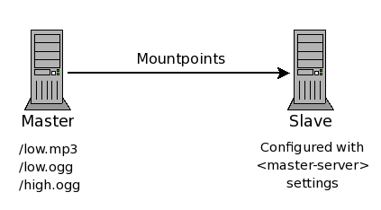

Icecast 2 Config File
Overview
This section will describe each section of the config file and is grouped into the following sections:
- Limits
- Authentication
- Stream Directory Settings
- Misc Server settings
- Relay settings
- Mount Specific settings
- File path settings
- Logging
- Security
Limits
<limits>
<clients>100</clients>
<sources>2</sources>
<queue-size>102400</queue-size>
<client-timeout>30</client-timeout>
<header-timeout>15</header-timeout>
<source-timeout>10</source-timeout>
<burst-on-connect>1</burst-on-connect>
<burst-size>65536</burst-size>
</limits>
This section contains server level settings that, in general, do not need to be changed. Only modify this section if you are know what you are doing.
clients
sources
queue-size
This will be the default setting for the streams which is 512k unless overridden here. You can override this in the individual mount settings which can be useful if you have a mixture of high bandwidth video and low bitrate audio streams.
client-timeout
header-timeout
source-timeout
burst-on-connect
burst-size
Authentication
<authentication>
<source-password>hackme</source-password>
<relay-user>relay</relay-user>
<relay-password>hackme</relay-password>
<admin-user>admin</admin-user>
<admin-password>hackme</admin-password>
</authentication>
This section contains all the usernames and passwords used for administration purposes or to connect sources and relays.
source-password
relay-user
relay-password
admin-user
admin-password
Stream Directory Settings
<directory>
<yp-url-timeout>15</yp-url-timeout>
<yp-url>http://dir.xiph.org/cgi-bin/yp-cgi</yp-url>
</directory>
This section contains all the settings for listing a stream on any of the Icecast2 YP Directory servers. Multiple occurances of this section can be specified in order to be listed on multiple directory servers.
yp-url-timeout
yp-url
Misc Server Settings
Server wide settings.
<hostname>localhost<hostname>
<fileserve>1</fileserve>
<server-id>icecast 2.3</server-id>
hostname
fileserve
server-id
The following shows how you can specify the listening settings for the server.
The first shows an example of a common and simple way to define a listening socket
<listen-socket>
<port>8000</port>
</listen-socket>
Using this as a basis we can extend this with an <bind-address> setting to limit which address icecast will listen on. Most will not need to use bind-address and often get confused by using it when there is no need. Another possibility is to use an <ssl> boolean setting which informs icecast that a secured connection is to be used. A common use for using a secure connection would be for admin page access.
The following shows how we can extend a single listen-socket to work with shoutcast style source clients. There are two issues shoutcast source clients have over icecast source clients, one is the lack of mountpoint and the second is the requirement of two ports. Both of these issues are handled by a simple addition in the listen-socket.
<listen-socket>
<port>8000</port>
<shoutcast-mount>/live.mp3</shoutcast-mount>
</listen-socket>
As before the port specified is allocated but this time the shoutcast-mount implicity defines a second listening socket whose port number is always one higher than the port defined, this also informs icecast of which mountpoint the shoutcast source client on this socket will be using. Using this approach you can allow multiple shoutcast source clients to connect at the same time.
The following is just to show the longer approach to defining shoutcast compatability.
<shoutcast-mount>/live.nsv</shoutcast-mount>
<-- You may have multiple <listen-socket> elements -->
<listen-socket>
<port>8000</port>
</listen-socket>
<listen-socket>
<port>8001</port>
<shoutcast-compat>1</shoutcast-compat>
</listen-socket>
Note that multiple listen-socket sections may be configured in order to have icecast2 listen on multiple network interfaces or multiple ports. If a bind-address is not specified for a particular listen-socket, then the socket will be bound to all interfaces (including IPv6 if available). For most people, the bind-address option will not be required and often confuses people.
port
bind-address
shoutcast-mount
Defining this within a listen-socket group tells icecast that this port and the subsequent port are to be used for shoutcast compatible source clients. This is an alternative to the shoutcast-compat approach as this implicitly defines the second listening socket and allows for specifying multiple sockets using different mountpoints for shoutcast source clients. The shoutcast-mount outside of a listen-socket group is the global setting of the mountpoint to use.
shoutcast-compat
Relaying Streams
This section contains the servers relay settings. The relays are implemented using a pull system where the receiving server connects as if its a listener to the sending server. There are two types of relay setups: a "Master server relay" or a "Specific Mountpoint relay."
Master Relay
A Master server relay is only supported between icecast2 servers and is used to relay a number of mountpoints from a remote icecast2 server.
<master-server>127.0.0.1</master-server>
<master-server-port>8001</master-server-port>
<master-update-interval>120</master-update-interval>
<master-username>relay</master-username>
<master-password>hackme</master-password>
<relays-on-demand>0</relays-on-demand>
The following diagram shows the basics of using a Master relay. Please note that the slave is configured with the <master-server>, <master-server-port>, etc settings and the master is the icecast server from which the slave will pull mountpoints and relay them. Using a Master server relay, all non-hidden mountpoints on the master can be relayed using this mechanism.

A server is configured as a Master Server relay by specifying the <master-server>, <master-server-port>,<master-update-interval>,<master-password> values in the config file. The server that is being relayed does not need any special configuration.
master-server
master-server-port
master-update-interval
master-username
master-password
relays-on-demand
Specific Mountpoint Relay
If only specific mountpoints need to be relayed, then you can configure Icecast with a "Specific Mountpoint Relay".
The following diagram shows the basics of using a Specific Mountpoint relay. Note that the relaying Icecast is configured with the <relay> settings and will pull the specified mountpoint(s) and relay them to the listeners. Using a Specific Mountpoint Relay, only those mountpoints specified will be relayed.
Specific Mountpoint Relays can be configured to relay from an Icecast 2 server, as well as Icecast 1.x and Shoutcast. A server is configured as a Specific Mountpoint Server relay by specifying a <relay> XML chunk in the config file for each mountpoint to be relayed. The server that is being relayed does not need any special configuration.
<relay>
<server>127.0.0.1</server>
<port>8001</port>
<mount>/example.ogg</mount>
<local-mount>/different.ogg</local-mount>
<username>joe</username>
<password>soap</password>
<relay-shoutcast-metadata>0</relay-shoutcast-metadata>
<on-demand>1</on-demand>
</relay>
server
port
mount
local-mount
username
password
relay-shoutcast-metadata
on-demand
An on-demand relay will only retrieve the stream if there are listeners requesting the stream. 1=enabled, 0=disabled (default is <relays-on-demand>). This is useful in cases where you want to limit bandwidth costs when no one is listening.
Mount Specific Settings
<mount>
<mount-name>/example-complex.ogg</mount-name>
<username>othersource</username>
<password>hackmemore</password>
<max-listeners>1</max-listeners>
<max-listener-duration>3600</max-listener-duration>
<dump-file>/tmp/dump-example1.ogg</dump-file>
<intro>/intro.ogg</intro>
<fallback-mount>/example2.ogg</fallback-mount>
<fallback-override>1</fallback-override>
<fallback-when-full>1</fallback-when-full>
<charset>ISO8859-1</charset>
<public>1</public>
<stream-name>My audio stream</stream-name>
<stream-description>My audio description</stream-description>
<stream-url>http://some.place.com</stream-url>
<genre>classical</genre>
<bitrate>64</bitrate>
<type>application/ogg</type>
<subtype>vorbis</subtype>
<hidden>1</hidden>
<burst-size>65536</burst-size>
<mp3-metadata-interval>4096</mp3-metadata-interval>
<authentication type="htpasswd">
<option name="filename" value="myauth"/>
<option name="allow_duplicate_users" value="0"/>
</authentication>
<on-connect>/home/icecast/bin/source-start</on-connect>
<on-disconnect>/home/icecast/bin/source-end</on-disconnect>
</mount>
This section contains the settings which apply only to a specific mountpoint and applies to an incoming stream whether it is a relay or a source client. The purpose of the mount definition is to state certain information that can override either global/default settings or settings provided from the incoming stream.
A mount does not need to be stated for each incoming source although you may want to specific certain settings like the maximum number of listeners or a mountpoint specific username/password. As a general rule, only define what you need to but each mount definition needs at least the mount-name. Changes to most of these will apply across a configuration file re-read even on active streams, however some only apply when the stream starts or ends.
mount-name
username
password
max-listeners
max-listener-duration
dump-file
intro
An optional value which will specify the file those contents will be sent to new listeners when they connect but before the normal stream is sent. Make sure the format of the file specified matches the streaming format. The specified file is appended to webroot before being opened.
fallback-mount
If clients cannot fallback to another mountpoint, due to a missing fallback-mount or it states a mountpoint that is just not available, then those clients will be disconnected. If clients are falling back to a mountpoint and the fallback-mount is not actively streaming but defines a fallback-mount itself then those clients may be moved there instead. This multi-level fallback allows clients to cascade several mountpoints.
A fallback mount can also state a file that is located in webroot. This is useful for playing a pre-recorded file in the case of a stream going down. It will repeat until either the listener disconnects or a stream comes back available and takes the listeners back. As per usual, the file format should match the stream format, failing to do so may cause problems with playback.
Note that the fallback file is not timed so be careful if you intend to relay this. They are fine on slave streams but don't use them on master streams, if you do then the relay will consume stream data at a faster rate and the listeners on the relay would eventually get kicked off.
fallback-override
fallback-when-full
When set to 1, this will cause new listeners, when the max listener count for the mountpoint has been reached, to move to the fallback mount if there is one specified.
no-yp (deprecated)
Setting this option prevents this mountpoint from advertising on YP. The default is 0 so YP advertising can occur however you may want to prevent it here if you intend listeners to connect to a local relay instead. Deprecated option, replaced by <public>
charset
For non-Ogg streams like MP3, the metadata that is inserted into the stream often has no defined character set. We have traditionally assumed UTF8 as it allows for multiple language sets on the web pages and stream directory, however many source clients for MP3 type streams have assumed Latin1 (ISO 8859-1) or leave it to whatever character set is in use on the source client system.
This character mismatch has been known to cause a problem as the stats engine and stream directory servers want UTF8 so now we assume Latin1 for non-Ogg streams (to handle the common case) but you can specify an alternative character set with this option.
The source clients can also specify a charset= parameter to the metadata update URL if they so wish.
public
The default setting for this is -1 indicating that it is up to the source client or relay to determine if this mountpoint should advertise. A setting of 0 will prevent any advertising and a setting of 1 will force it to advertise. If you do force advertising you may need to set other settings listed below as the YP server can refuse to advertise if there is not enough information provided.
stream-name
Setting this will add the specified name to the stats (and therefore YP) for this mountpoint even if the source client/relay provide one.
stream-description
Setting this will add the specified description to the stats (and therefore YP) for this mountpoint even if the source client/relay provide one.
stream-url
Setting this will add the specified URL to the stats (and therefore YP) for this mountpoint even if the source client/relay provide one. The URL is generally for directing people to a website.
genre
Setting this will add the specified genre to the stats (and therefore YP) for this mountpoint even if the source client/relay provide one. This can be anything be using certain key words can help searches in the YP directories.
bitrate
Setting this will add the specified bitrate to the stats (and therefore YP) for this mountpoint even if the source client/relay provide one. This is stated in kbps.
type
Setting this will add the specified mime type to the stats (and therefore YP) for this mountpoint even if the source client/relay provide one. It is very unlikely that this will be needed.
subtype
Setting this will add the specified subtype to the stats (and therefore YP) for this mountpoint. The subtype is really to help the YP server to identify the components of the type. An example setting is vorbis/theora do indicate the codecs in an Ogg stream
burst-size
mp3-metadata-interval
This optional setting specifies what interval, in bytes, there is between metadata updates within shoutcast compatible streams. This only applies to new listeners connecting on this mountpoint, not existing listeners falling back to this mountpoint. The default is either the hardcoded server default or the value passed from a relay.
hidden
authentication
on-connect
State a program that is run when the source is started. It is passed a parameter which is the name of the mountpoint that is starting. The processing of the stream does not wait for the script to end. This option is not available on win32
on-disconnect
State a program that is run when the source ends. It is passed a parameter which is the name of the mountpoint that has ended. The processing of the stream does not wait for the script to end. This option is not available on win32
Path Settings
<paths>
<basedir>./</basedir>
<logdir>./logs</logdir>
<pidfile>./icecast.pid</pidfile>
<webroot>./web</webroot>
<adminroot>./admin</adminroot>
<allow-ip>/path/to/ip_allowlist</allow-ip>
<deny-ip>/path_to_ip_denylist</deny-ip>
<alias source="/foo" dest="/bar"/>
</paths>
This section contains paths which are used for various things within icecast. All paths (other than any aliases) should not end in a '/'.
basedir
logdir
pidfile
webroot
adminroot
allow-ip
deny-ip
alias source="/foo" dest="/bar"
Logging Settings
<logging>
<accesslog>access.log</accesslog>
<errorlog>error.log</errorlog>
<playlistlog>playlist.log</playlistlog>
<loglevel>4</loglevel> <-- 4 Debug, 3 Info, 2 Warn, 1 Error -->
</logging>
This section contains information relating to logging within icecast. There are two logfiles currently generated by icecast, an error.log (where all log messages are placed) and an access.log (where all stream/admin/http requests are logged).
Note that on non-win32 platforms, a HUP signal can be sent to icecast in which the log files are re-opened for appending giving the ability move/remove the log files.
accesslog
errorlog
playlistlog
logsize
logarchive
loglevel
The following mapping can be used to set the appropraite value :
- loglevel = 4 - Debug, Info, Warn, Error messages are printed
- loglevel = 3 - Info, Warn, Error messages are printed
- loglevel = 2 - Warn, Error messages are printed
- loglevel = 1 - Error messages only are printed
Security Settings
<security>
<chroot>0</chroot>
<changeowner>
<user>nobody</user>
<group>nogroup</group>
</changeowner>
</security>
This section contains configuration settings that can be used to secure the icecast server by performing a chroot to a secured location. This is currently not supported on win32.